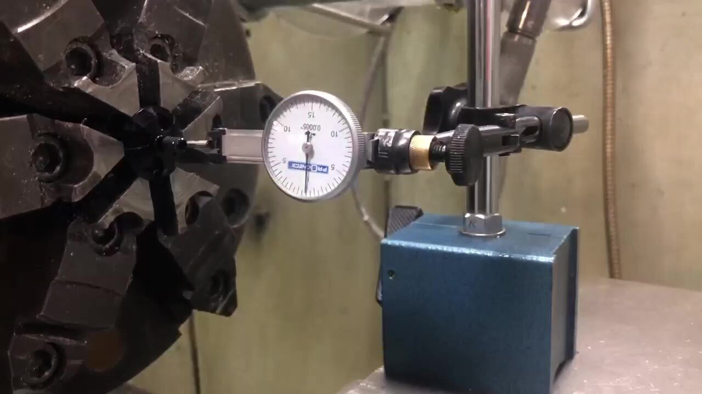
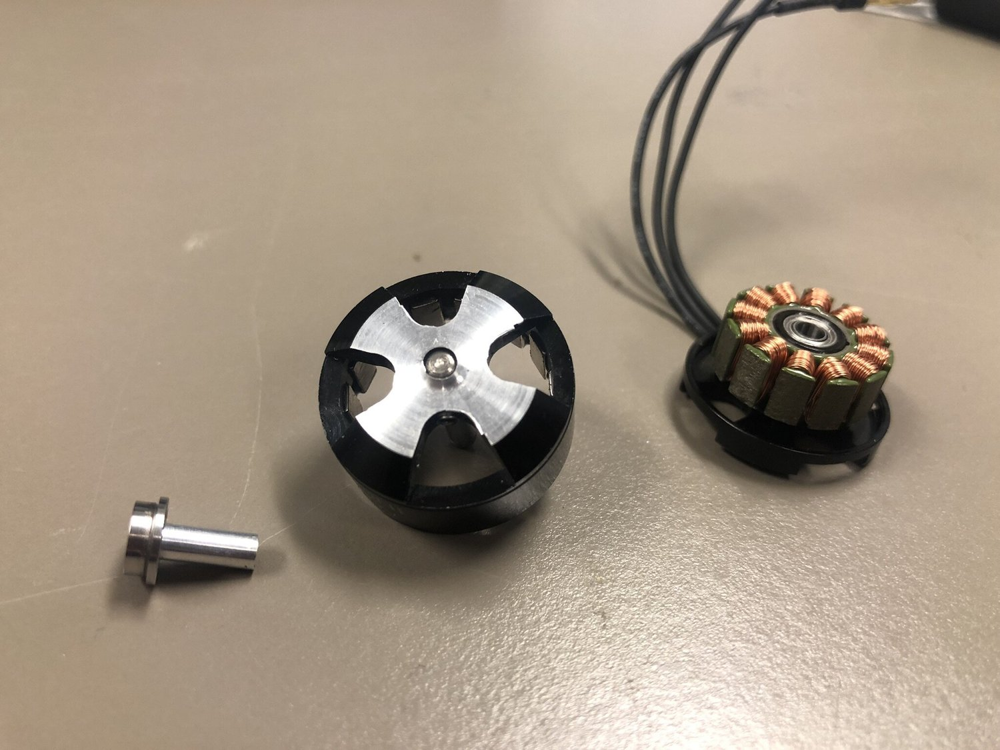
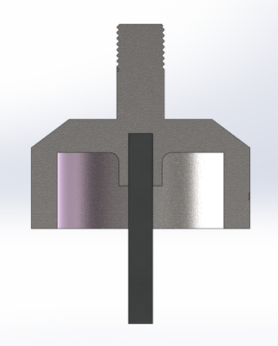
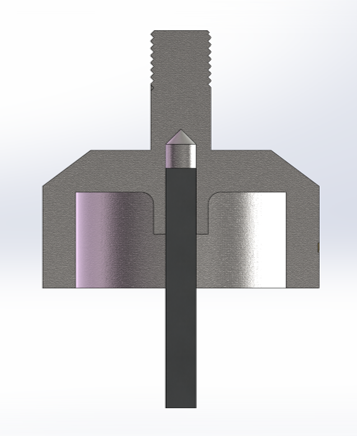

Find the Center

DC Brushless motors are ideal for ornithopter application. However, such motors typically have M5-threaded shafts, suitable for hobbiest propellers but not for my English-unit pinions. So, I put my motors onto a lathe.
It took only 5 minutes to turn the shaft down to fitting, but before that, it took me 0.5 hour to find its center. At last, I managed to locate the center within 0.5 thou.
Though well-centered, the machined shaft still failed. During testing, the shaft broke.

The shaft breaks
I didn’t know the manufacturer would drill into the external shaft so deep that it was almost hollow. As always, nothing is what I think it is.

Ideal

Realistic
Acknowledgement:
Trained and mentored by Wilson Student Project Team Center. As always, thank you Casey my friend.